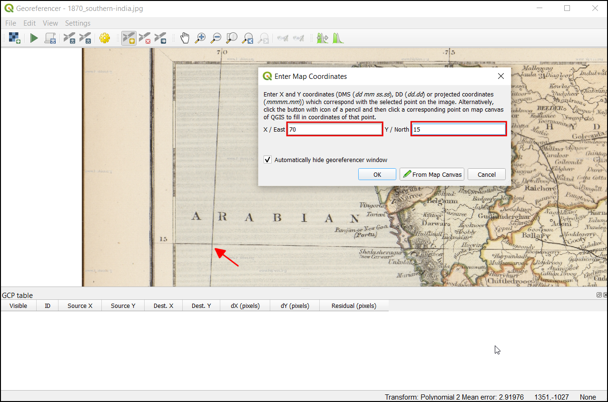
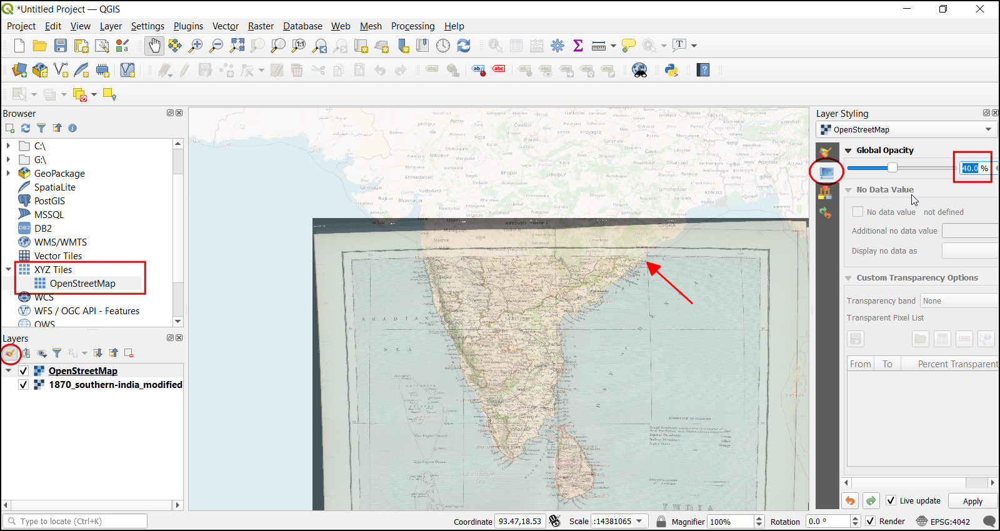

Ujaval Gandhi
Ujaval Gandhiزمین مرجع کردن نقشه شیت توپوگرافی اسکن شده (QGIS3)¶
اکثر پروژه های GIS نیاز به داده های رستری زمین مرجع شده دارند. زمین مرجع کردن * Georeferencing * فرآیند اختصاص مختصات زمین واقعی به هر پیکسل رستر است. در خیلی مواقع این مختصات با برداشت میدانی بدست می آیند - جمع آوری مختصات با دستگاه GPS برای عارضه های قابل شناسایی در تصویر یا نقشه. در بعضی موارد ، که می خواهید نقشه های اسکن شده را رقومی کنید ، می توانید مختصات را از نشان های موجود در خود تصویر نقشه بدست آورید. با استفاده از این مختصات نمونه یا GCPs (Ground Control Points) ، تصویر زمین مرجع می شود و متناسب با سیستم مختصات انتخاب شده ایجادمی شود. در این آموزش در مورد مفاهیم ، استراتژی ها و ابزارهای QGIS برای دستیابی به یک زمین مرجع با دقت بالا بحث خواهم کرد.
این آموزش برای زمین مرجع تصویری است که اطلاعات مختصات موجود در خود تصویر نقشه را موجود است(به عنوان مثال شبکه های مختصات با برچسب). اگر تصویر منبع شما چنین اطلاعاتی ندارد ، می توانید از روشی که در زمین مرجع کردن عکس هوایی (QGIS) توضیح داده شده است استفاده کنید.
نمای کلی تمرین¶
ما نقشه اسکن شده جنوب هند 1870 استفاده خواهیم کرد و با استفاده از QGIS زمین مرجع می شود.
آنجه شما خواهید آموخت¶
نحوه تعیین دیتوم و سیستم مختصات برای نقشه های قدیمی.
Save the GCP created.
Edit the created GCP for fine tuning.
اخذ داده¶
وبگاه نقشه های قدیمی اسکن شده هیکیس Hipkiss’s Scanned Old Maps مجموعه غنی نقشه های اسکن شده بدون کپی رایت را دارد و هرکسی می تواند برای تحقیق آنها را استفاده کند.
نقشه 1870 جنوب هند 1870 map of southern India را بارگیری کنید و آن را به عنوان تصویر JPG بر روی هارد دیسک خود ذخیره کنید.
برای راحتی کار ، می توانید مستقیماً یک کپی از مجموعه داده را از لینک زیر بارگیری کنید:
مراحل¶
Open QGIS and click on to open the tool.
توجه
From QGIS versions 3.26 onwards, the Georeferencer can be launched from .

The Georeferencer is divided into 2 sections. The top section where the image will be displayed and the bottom section where a table showing your GCPs will appear.

اکنون تصویر JPG خود را باز خواهیم کرد. رفتن به به تصویر بارگیری شده از نقشه اسکن شده بروید و بر :guilabel:`Open`کلیک کنید.
خواهید دید که تصویر در قسمت بالا بارگیری می شود. برای کسب اطلاعات بیشتر در مورد نقشه می توانید از کنترل های بزرگنمایی / تغییر مکان در نوار ابزار استفاده کنید.

اکنون باید مختصات را به برخی از نقاط این نقشه اختصاص دهیم. اگر به دقت نگاه کنید ، شبکه مختصات علامت گذاری شده را مشاهده خواهید کرد. این خطوط شبکه عرض جغرافیایی Latitude و طول جفرافیایی Longitude است.

Before adding Ground Control Points (GCP), we need to define the Transformation Settings. Click on the gear icon in georeferencing window to open the Transformation settings dialog.

In the Transformation settings dialog, choose the Transformation type as
Polynomial 2. See QGIS Documentation to learn about different transformation types and their uses. Then select the Resampling method as theNearest neighbor. Click the Select CRS button next to Target SRS.

اگر یک نقشه اسکن شده از این زمین مرجع می کنید می توانید اطلاعات CRS را از خود نقشه بدست آورید. با نگاهی به تصویر نقشه ما ، سیستم مختصات طول و عرض جفرافیایی Latitude / Longitude است. هیچ دیتومی قید نشده است ، بنابراین ما باید یک دیتوم مناسب را فرض کنیم. از آنجا که منطقه در هند است و نقشه کاملاً قدیمی است ، می توانیم شرط ببندیم که دیتوم Everest 1830 نتایج خوبی به ما می دهد. "everest" را جستجو کنید و CRS را با قدیمی ترین تعریف از دیتوم Everestبا کد (EPSG: 4042) را انتخاب کنید. بر OK کلیک کنید.

توجه
نقشه توپو گوافی هند Topo Sheet که بین سالهای 1960 و 2000 ایجاد شده است از اسپروئید Sphereoid Everest 1956 و دیتوم India_nepal استفاده می کند. اگر SOI Topo Sheets زمین مرجع کنید، می توانید CRS سفارشی را با پارامترهای زیر در QGIS تعریف کنید و در این مرحله از آن استفاده کنید. این تعریف شامل پارامترهای delta_x ، delta_y و delta_z برای تبدیل هندسی این داده به WGS84 است. برای اطلاعات بیشتر در مورد سیستم شبکه هند Indian Grid System به این صفحه مراجعه کنید.
+proj=longlat +a=6377301.243 +b=6356100.2284 +towgs84=295,736,257,0,0,0,0 +no_defs
توجه
بیشتر نقشه ها از CRS پروژکشنی ایجاد می شوند. اگر در نقشه ای که سعی بر زمین مرجع نمودن دارید از CRS پروژکشنی که می شناسید استفاده می کند ، اما برچسب های گراتیکول در یک CRS جغرافیایی (عرض / طول جغرافیایی) باشد، برای به حداقل رساندن اعوجاج ، می توانید از یک جریان کار جایگزین استفاده کنید. به جای استفاده از CRS جغرافیایی مانند آنچه در اینجا استفاده می کنیم ، می توانید یک شبکه برداری در QGIS ایجاد کرده و آن را به CRS پروژکشنی تبدیل کنید تا به عنوان مرجعی برای ثبت دقیق مختصات استفاده شود. برای اطلاعات بیشتر به این صفحه this page مراجعه کنید.
Name your output raster as
1870_southern_india_modified.tif. ChooseLZWas the Compression. Check the Save GCP points to store the points as seperate file for future purpose. Make sure the Load in QGIS when done option is checked. Click OK.

توجه
Uncompressed GeoTIFF files can be very large in size. So compressing them is always a good idea. You can learn more about different TIFF compression options (LZW, PACKBITS or DEFLATE) in this article.
Now we can start adding the Ground Control Points (GCP). Click on the Add Point button.

Now place the cross-hair at the intersections of the grid lines and left-click, this will serve as the ground-truth in our case. As the grid lines are labeled, we can determine the X and Y coordinates of the points using them. In the pop-up window, enter the coordinates. Remember that X=longitude and Y=latitude. Click OK.

مشاهده خواهید کرد که جدول GCP اکنون دارای یک ردیف با جزئیات اولین GCP شما است.

Similarly, add more GCPs covering the entire image. The more points you have, the more accurate your image is registered to the target coordinates. The
Polynomial 2transform requires at least 6 GCPs. Once you have added the minimum number of points required for the transform, you will notice that the GCPs now have a non-zerodX,dYandResidualerror values. If a particular GCP has unusually high error values, that usually means a human-error in entering the coordinate values. So you can delete that GCP and capture it again. You can also edit the coordinate values in the GCP Table by clicking the cell in either Dest. X or Dest. Y columns.

Once you are satisfied with the GCPs, click the Start Georeferencing button. This will start the process of warping the image using the GCPs and creating the target raster.

Once the process finishes, you will see the georeferenced layer loaded in QGIS. The georeferencing is now complete. Also, you will notice the Project CRS in the bottom right is set to EPSG:4042 as described in Transformation Settings.

Drag and drop the
OpenStreetMapas Base Map from the XYZ Tiles dropdown at the bottom of the Browser panel to verify the georeferenced layer. To set the transparency, click on the Open layer styling panel icon and select Transparency tab. Set the transparency to40 %. Now the georeferenced image must overlay with the basemap outline.

If the georeference needs more fine-tuning, we can start from the collected GCP points. Browse the
1870_southern_india_modified.tiffile location. You can find an additional file,1870_southern_india_modified.tif.points. This file will contain the GCP points information.

Open the georeferencing tool in QGIS, click , and select the
1870_southern_india_modified.tif.points. This will load the GCP created previously. Then load the1870_southern_india_modified.tifto fine-tune your work.

{kind=link}
{kind=link}
If you want to give feedback or share your experience with this tutorial, please comment below. (requires GitHub account)